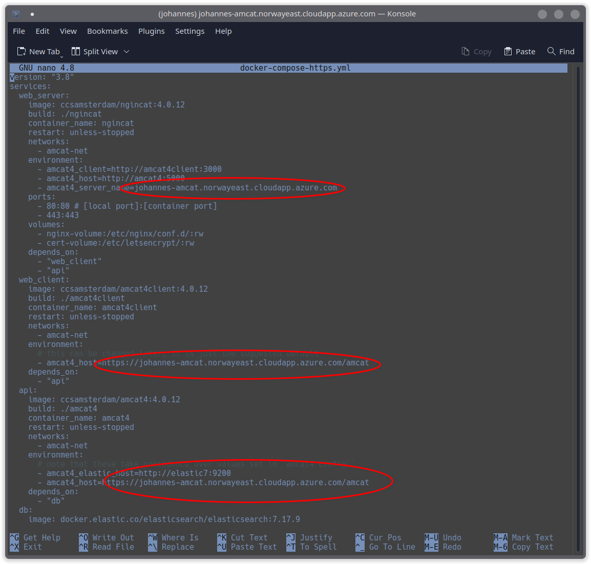
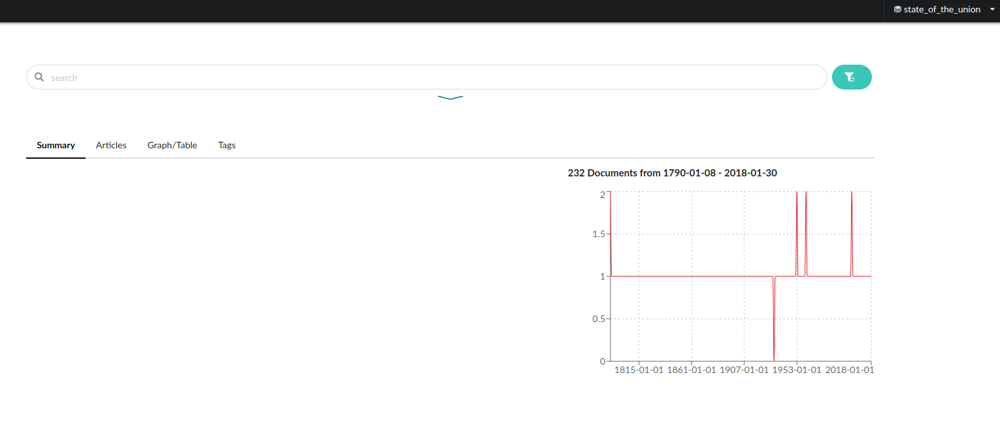

curl -O https://raw.githubusercontent.com/ccs-amsterdam/amcat4docker/main/docker-compose.ymlIntroducing AmCAT & annotinder
Collaborative annotation projects (for supervised machine learning) with annotinder
AmCAT
What is AmCAT?
- Free and Open Source software suite for text analysis
- Two main goals: to standardize text analysis tasks with easy to use software (while offering quality-of-life features for power users)
- Great way to store, search, share and present data collections for teams or individual researchers
- Funded by OPTED – Observatory for Political Texts in European Democracies
(Learn more at https://amcat.nl/)
Team AmCAT
At Department of Communication Science at Vrije Universiteit Amsterdam:
- Wouter van Atteveldt
- Johannes B. Gruber
- Farzam Fanitabasi (formally)
- Kasper Welbers
Since everything is open source, other people made improvements through pull requests.
What is OPTED
Example: Cool collection of text repositories and tools: https://meteor.opted.eu/

Why use AmCAT
- You are part of a team of researchers doing text analysis
- You want to share your data in a safe way (with fine-grained access management for different parts of the data)
- You have large datasets that are better stored on a server and you need server software made for researchers
Installing the AmCAT suite locally through Docker
- Head to Github repo at https://github.com/ccs-amsterdam/amcat4docker
- Choose one of the provided versions:
| image | purpose |
|---|---|
| docker-compose | Recommended for local installations |
| docker-compose-https | Recommended for publicly reachable instance (enables https support) |
| docker-compose-nightlies | Nightly images with latest versions of all packages |
| docker-compose-feature | Can be used to build images from GitHub branches |
- Download the chosen Docker Compose file (if installed, you can use
curl)
- Install AmCAT through Docker Compose
docker-compose up --pull="missing" -d- Check if all worked well
docker psOpen: http://localhost/
Installing AmCAT on a cloud computing platform
- Make an account (e.g., a free trial account at Azure):
- Create a virtual machine with Ubuntu (B2ms seems like a good cheap option):
- Get a URL (DNS) in the overview pane:
- Enable SSH and connect to the VM
Install docker and Docker Compose (you can follow the steps here: https://docs.docker.com/engine/install/ubuntu/#install-using-the-repository)
Download the Docker Compose file for servers (with https enabled):
curl -O https://raw.githubusercontent.com/ccs-amsterdam/amcat4docker/main/docker-compose-https.yml- Change the server address localhost and example.com to your URL (DNS)
nano docker-compose-https.yml
- Install AmCAT through Docker Compose
sudo docker compose -f docker-compose-https.yml up --pull="missing" -d- Enable secure https connections
sudo docker exec -it ngincat certbot --nginx -d johannes-amcat.norwayeast.cloudapp.azure.comLoad some test data
docker exec -t amcat4 amcat4 create-test-indexHead over to http://localhost/ or https://johannes-amcat.norwayeast.cloudapp.azure.com/
Configure overall access (and other things)
sudo docker exec -it amcat4 amcat4 configsudo docker restart amcat4
Control AmCAT through the API
python3 -m venv env
env/bin/pip install git+https://github.com/ccs-amsterdam/amcat4py.git
bash env/bin/activatefrom amcat4py import AmcatClient
amcat = AmcatClient("http://localhost/amcat")
if amcat.login_required():
amcat.login()We can first list all available indexes, as a document collection is called in Elasticsearch and thus in amcat:
amcat.list_indices()You can see that the test index we added earlier is here and that it is called “state_of_the_union”. To see everyone who has been granted access to an index we can use:
amcat.list_index_users(index="state_of_the_union")To see what an index looks like, we can query it leaving all fields blank to request all data at once:
sotu = list(amcat.query("state_of_the_union", fields=None))
print(len(sotu))
for k, v in sotu[1].items():
print(k + "(" + str(type(v)) + "): " + str(v)[0:100] + "...")Knowing now what a document should look like in this index, we can upload a new document to get familiar with the process:
from datetime import datetime
new_doc = {
"title": "test",
"text": "test",
"date": "2022-01-01",
"president": "test",
"year": "2022",
"party": "test",
"url": "test"
}
amcat.upload_documents("state_of_the_union", [new_doc])Let’s see if the the new document is in the index:
import pprint
pp = pprint.PrettyPrinter(depth=4)
res=list(amcat.query("state_of_the_union", fields=None, filters={"title": "test"}))
pp.pprint(res)Instead of adding whole documents, you can also change fields in an index. Fields are similar to columns in a table in Excel. However, you need to define the type of a field upon its creation and make sure that you later only add data which adheres to the specifications of the type (otherwise you will get an error). To learn more about the fields in the test index, you can use:
amcat.get_fields("state_of_the_union")You can see that there are five different types in this index: date, keyword, text, url and double. Keyword, text, url are all essentially the same type in Python, namely character strings. But text fields are hidden when the guest role is metareader. The date needs to be in the format YYYY-MM-DD and is automatically converted into a datetime class. Year should be a double, i.e., a numeric value or integer.
You can add new fields to this, for example, if you want to add a keyword to the documents:
amcat.set_fields("state_of_the_union", {"keyword":"keyword"})We can add something to the new field and see if it shows up:
test_doc = list(amcat.query("state_of_the_union", fields=["id"], filters={"title": "test"}))[0]
amcat.update_document("state_of_the_union", doc_id=test_doc["_id"], body={"keyword": "test"})
res=list(amcat.query("state_of_the_union", fields=["title", "keyword"], filters={"title": "test"}))
pp.pprint(res)Now that we have a better idea of what an index is and how it looks like, we can create a new one:
amcat.create_index(index="new_index", guest_role="metareader")I created this index so that unauthenticated users (guests) have access to meta information, but not the actual text (which should be a safe way to store, for example, copyrighted material).
amcat.list_indices()
amcat.get_fields("new_index")As you can see, the newly created index already contains fields. Before you fill the new index, you should define what the fields should look like:
amcat.set_fields(
"new_index",
{
"date": {"name": "date", "type": "date"},
"party": {"name": "party", "type": "text"},
"president": {"name": "president", "type": "text"},
"text": {"name": "text", "type": "text"},
"title": {"name": "title", "type": "text"},
"url": {"name": "url", "type": "url", "meta": {"amcat4_type": "url"}},
"year": {"name": "year", "type": "text"},
},
)Now we can add documents:
new_doc = {
"title": "test",
"text": "test",
"date": "2022-01-01",
"president": "test",
"year": "2022",
"party": "test",
"url": "test"
}
amcat.upload_documents("new_index", [new_doc])res=list(amcat.query("new_index", fields=None, filters={"title": "test"}))
pp.pprint(res)Finally, we can also delete an index:
amcat.delete_index("new_index")annotinder
annotinder currently consists of three packages: a server, a frontend and an R package. We are using the R package today, since it nicely packs all all three parts, so we can test a coding job locally.
if (!requireNamespace("rlang", quietly = TRUE)) install.packages("rlang", dependencies = TRUE)
rlang::check_installed("remotes")
rlang::check_installed("tibble")
if (!rlang::is_installed("annotinder")) remotes::install_github("ccs-amsterdam/annotinder-r")
library(annotinder)
library(dplyr)
library(ggplot2)annotinder structures annotations in the same way we learned before.
- We select a unit of analysis and prepare our data by sorting them into units.
- We then define categories
- We put the categories in a codebook
- Then we annotate
Create units
We create units from the included mini_sotu_par dataset. This data contains some paragraphs of US state of the Union adresses.
tibble::as_tibble(mini_sotu_par)We want to use the paragraph as the unit of analysis, and so we create units by taking the text column from the data frame above. We use the set_text function inside create_units units to tell annotinder that we want to use plain text in the units. You can also use set_markdown, to get some options to style text, or set_image, if you want to code images.
units <- create_units(mini_sotu_par, set_text(name = "text", value = text), id = "id") Define the categories
Next, we need to decide on what labels/categories we want to use. We start with a simple example where we want to ask coders exactly one question and give them three options for possible categories:
sentiment <- question(name = "sentiment",
question = "What is the sentiment of this text?",
type = "buttons",
codes = c(crimson = "Negative", grey = "Neutral", lightgreen = "Positive"),
instruction = "What attitude or feeling towards the subject is expressed in the text (if not neutral).")Note that we can use colours here to influence how the buttons in the interface will look like. We can now put this into the codebook
codebook <- create_codebook(sentiment)Code/annotate the data
We can now create a “job” which contains units and codebook.
job <- create_job(title = "simple_example", units = units, codebook = codebook)
# overwrite = TRUE is used for demonstration purposes, use with caution!
job_db <- create_job_db(job, overwrite = TRUE)
job_dbEach job is written to a SQLite database (unless you upload it to a server).
You can then start annotinder locally by pointing it to the database:
start_annotator(job_db)Analyze the outcome
We skip reliability and scaling for now, as this is only a test run to see if our annotation scheme makes sense.
results <- gimme_annotations(job_db)
resultsresults |>
count(value)results |>
left_join(mini_sotu_par) |>
count(value, party)A few more examples
annotinder very versatile and you can change the look and functioning of almost any aspect of the tool to fit your content analysis needs. For example, you could add a welcome to the coding job above:
welcome <- create_unit(
"id",
type = "train",
set_text("text", "Welcome to AnnoTinder!"),
set_question(name = "welcome", question = "Start Annotating", type = "confirm")
)
job <- create_job(title = "simple_example", units = c(welcome, units), codebook = codebook)
# overwrite = TRUE is used for demonstration purposes, use with caution!
job_db <- create_job_db(job, overwrite = TRUE)
start_annotator(job_db)You can also use an annotinder type question, which works great on mobile!
sentiment <- question("sentiment", "Swipe left for negative, right for positive, and up for neutral",
type = "annotinder",
codes = c(crimson = "Negative", grey = "Neutral", lightgreen = "Positive")
)
codebook <- create_codebook(sentiment)
job <- create_job(title = "simple_example", units = units, codebook = codebook)
job_db <- create_job_db(job, overwrite = TRUE)
start_annotator(job_db)As said before, you can also code images. And you can ask more than one question:
units_img <- create_units(
data = data.frame(id = 2L, name = "img", caption = "",
value = "https://gifdb.com/images/thumbnail/pusheen-cat-welcome-rs7fmtp64fodfdqr.gif"),
set_image(
name = "img",
value = value,
margin = "5px"
),
id = "id"
)
q1 <- question(name = "fav_animal",
type = "dropdown",
question = "What's your favourite type of animal?",
codes = c("Birds", "Mammals", "Insects", "Fish"),
instruction = "# Codebook instruction\n\nYou can integrate your codebook instructions directly in your codingjobs. These instructions will be shown the first time users open a unit with this codebook, and they can open it again by clicking the questionmark at the bottom-left")
q2 <- question(name = "open question",
question = "Waht do you see here?",
type = "inputs")
codebook_img <- create_codebook(q1, q2)
job <- create_job(title = "images", units = units_img, codebook = codebook_img)
job_db <- create_job_db(job, overwrite = TRUE)
start_annotator(job_db)gimme_annotations(job_db)There is also a survey mode:
feelings <- c("perfect", "good", "OK", "bad", "horrible")
survey_questions <- create_unit(
"1",
type = "survey",
set_question("1", "How do you feel today?", type = "scale", codes = feelings),
set_question("2", "How did you feel on average this week?", type = "scale", codes = feelings),
set_question("3", "How did you feel on average this month?", type = "scale", codes = feelings)
)
survey_job <- create_job("survey", survey_questions)
job_db <- create_job_db(survey_job, overwrite = TRUE)
start_annotator(job_db)And an annotation mode, which lets people put categories to smaller units text units via highlighting:
sentiment <- question(name = "sentiment",
question = "What is the sentiment of this text?",
type = "buttons",
codes = c(crimson = "Negative", grey = "Neutral", lightgreen = "Positive"),
instruction = "What attitude or feeling towards the subject is expressed in the text (if not neutral).")
sentiment <- annotation_variable(
name = "sentiment",
instruction = "Please select portions of the text that communicate a sentiment",
codes = c(crimson = "Negative", lightgreen = "Positive")
)
codebook <- create_codebook(sentiment)
job <- create_job(title = "annotation", units = units, codebook = codebook)
job_db <- create_job_db(job, overwrite = TRUE)
start_annotator(job_db)There are many more features covered in an introduction styled as a coding job here: https://annotinder.com/demo?units=introduction&codebook=dummy